Maphis is my good friend who spent three months traveling in Xin Jiang, Tibet, Yunnan and Sichuan. This series of photos were taken in Jiuzhaigou one year ago. He is glad to share his photos with my friends too. For more photos about his wonderful trip, please check his web site.
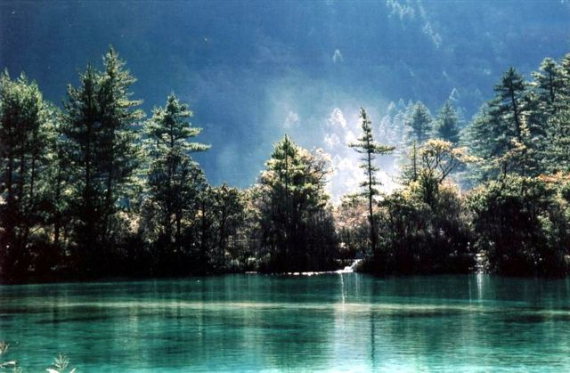
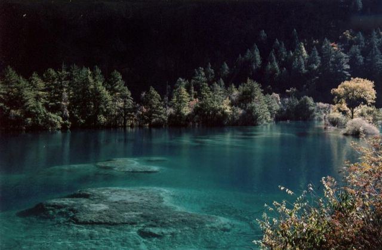
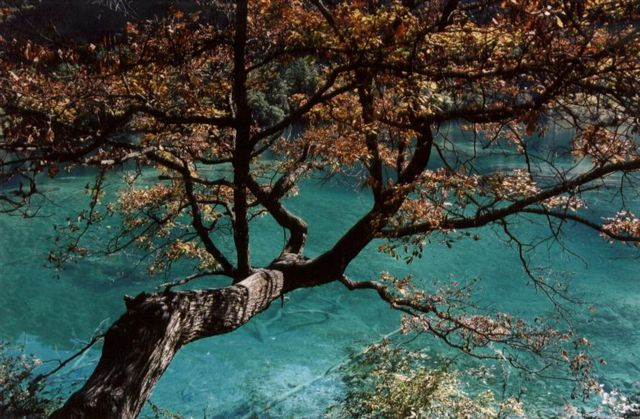
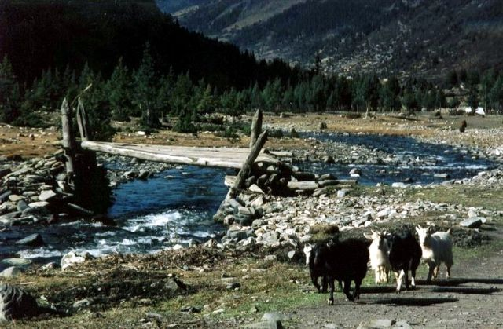
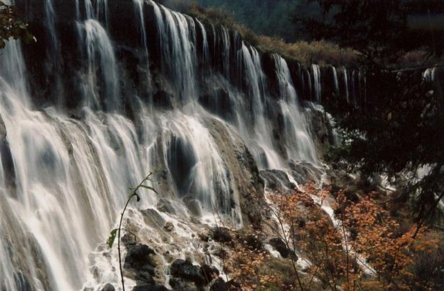
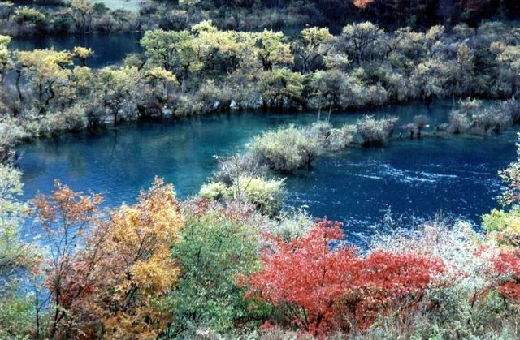
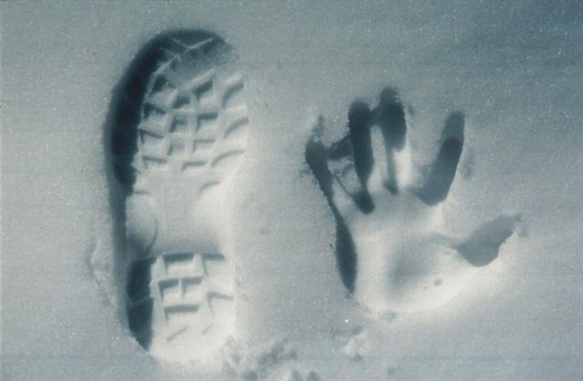
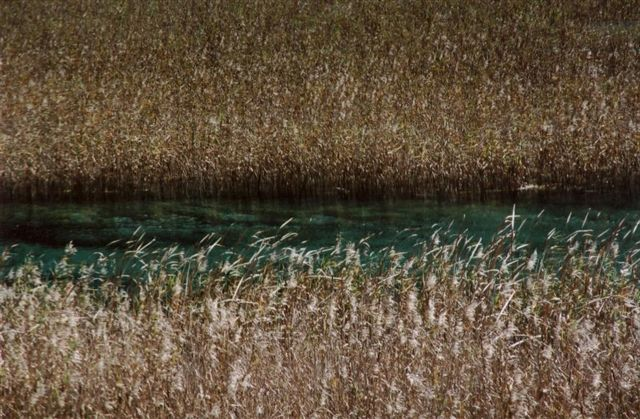
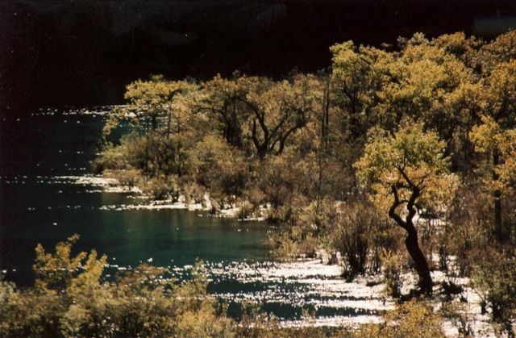
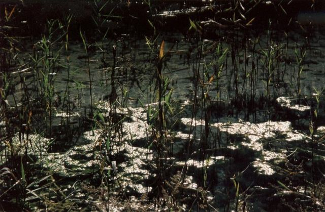
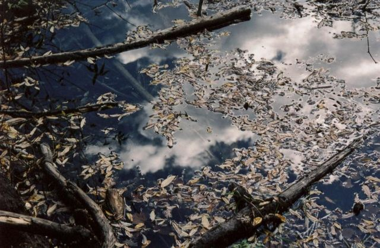
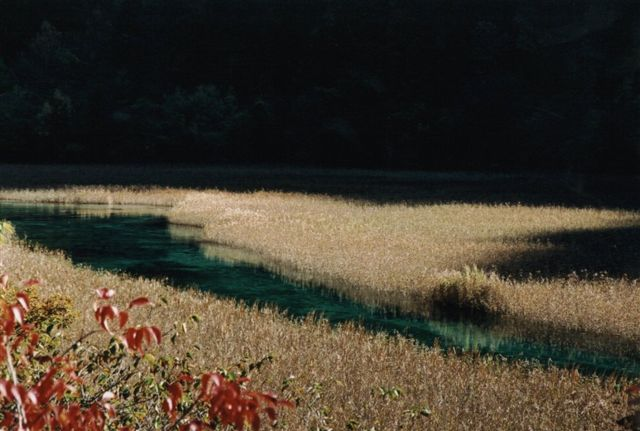
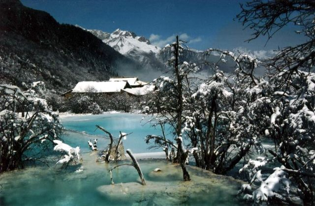
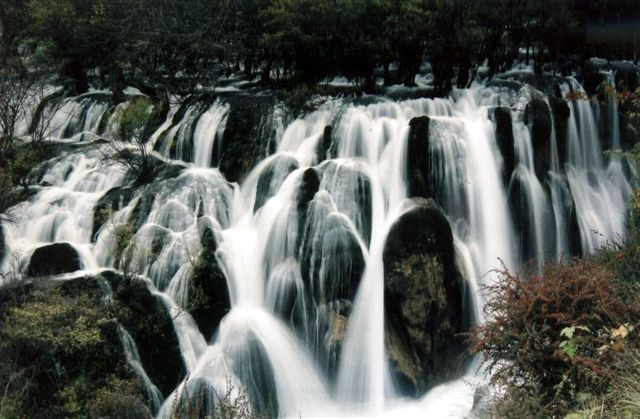
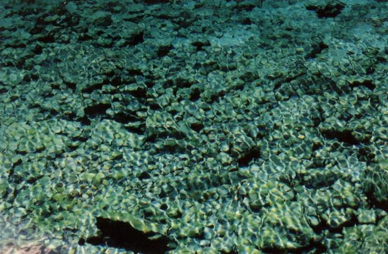
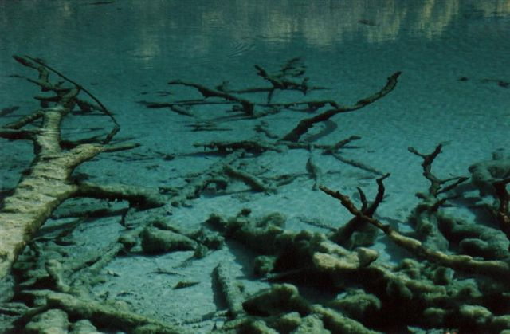
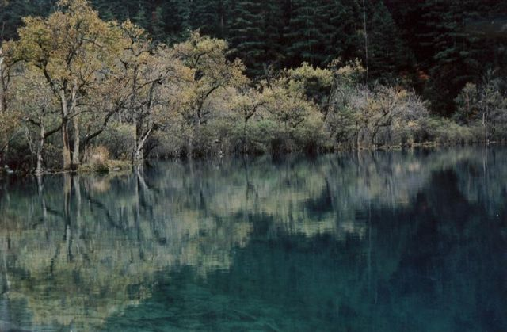
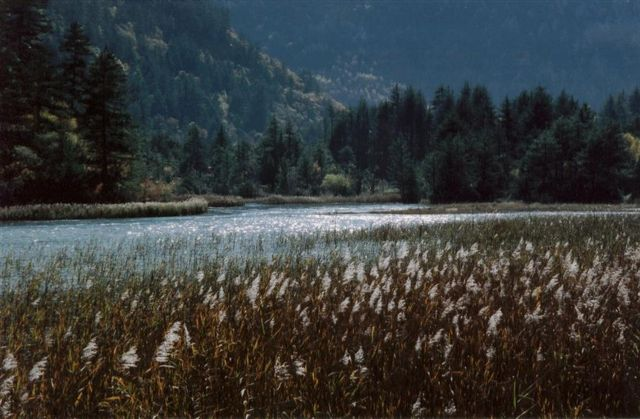
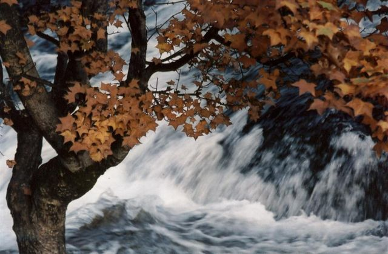
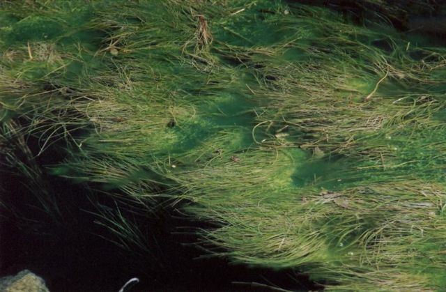
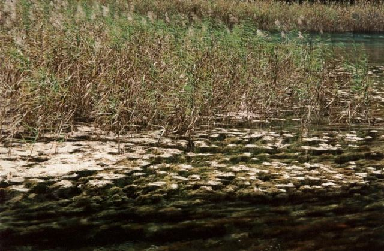
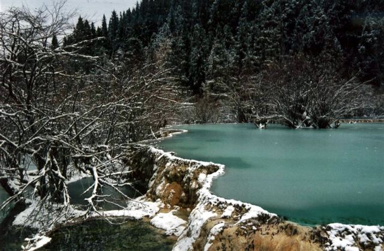
© Copyright 2002 Jian Shuo Wang. All right reserved.